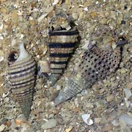
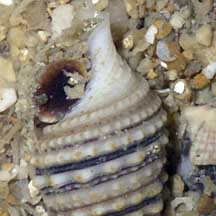
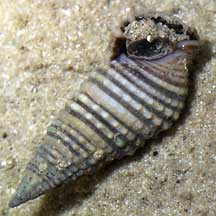
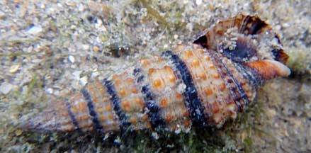
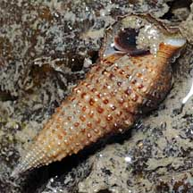

|
|
| shelled snails text index | photo index |
| Phylum Mollusca > Class Gastropoda > Family Cerithiidae |
| Variegated
creeper snail awaiting identification* Family Cerithiidae updated Jul 2020 Where seen? This small, pretty creeper snail is sometimes found in small groups on sandy sheltered areas near coral reefs. Sometimes found on tape seagrasses. Features: 1-2cm. Shell conical with different spiralling patterns of beaded lines and dots. The siphonal canal is twisted back. Operculum made out of a horn-like material, with a few whorls. Many species of creeper snails are have variegated patterns. They are difficult to tell apart in the field. The creeper snails on this page may not all be of the same species. |
|
 Sisters Island, Feb 06 |
 Closeup of shell opening and operculum. |
 Sentosa, Jul 05 |
|
 Tanah Merah, Jan 11 |
 Pulau Hantu, Sep 08 |
|
*Species are difficult to positively identify without close examination.
On this website, they are grouped by external features for convenience of display.
| Variegated creeper snails on Singapore shores |
On wildsingapore
flickr
|
| Other sightings on Singapore shores |